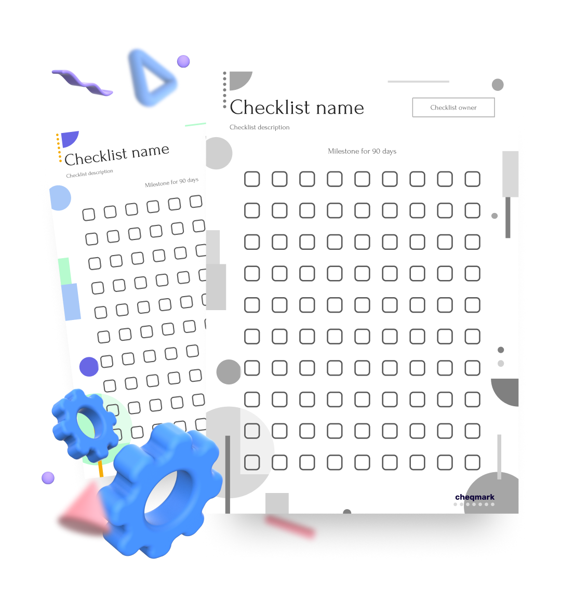

<section class="section section-4 bg-beige">
	<div class="container">
		<div class="flex flex-va-center flex-mobile-col vh100">

		<div class="image fw-image align-center">
			

			 <div class="circle bg-orange mobile-hidden circle-bottom-left"></div>
		  
		</div>

		<div class="content"> 
			 
			  
			<h2 class="mgb-50 mobile-hidden">Why you should use checklist maker</h2>

			<div class="text-block mgb-50">
				<h3>You can print them </h3>
				<p>We made sure that any checklist design you create can be black-and-white printed.</p>
			</div>

			<div class="mobile-hidden">
				<a href="Array" class="btn "></a>

			</div>

		
 
		</div>
		
	</div>
	</div>
</section>